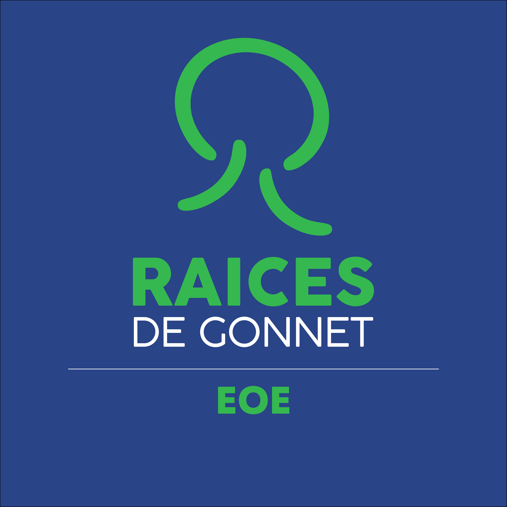
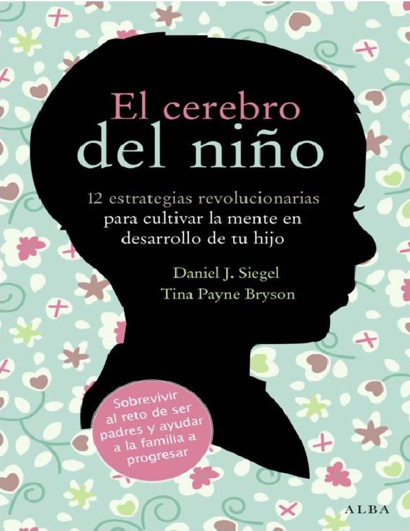
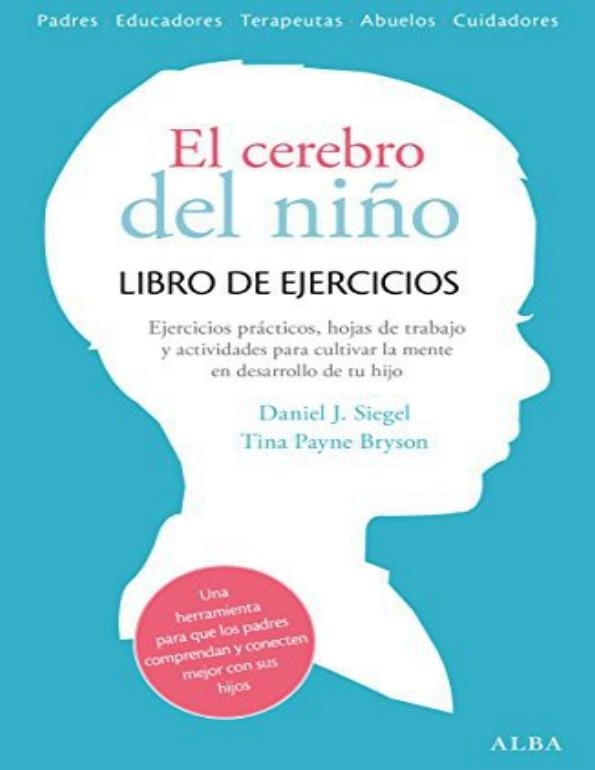
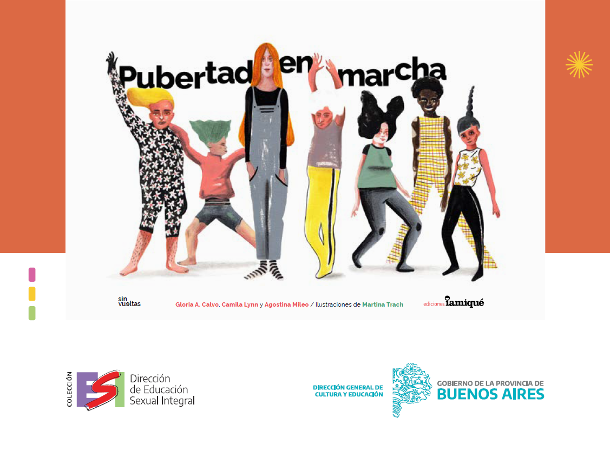
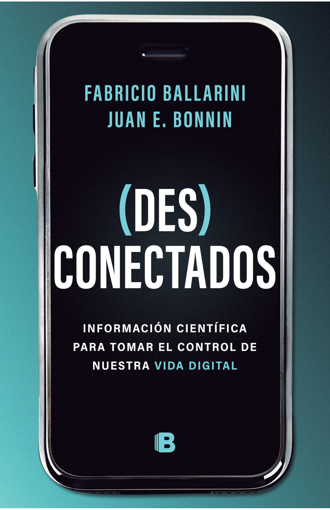
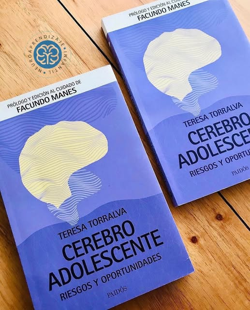
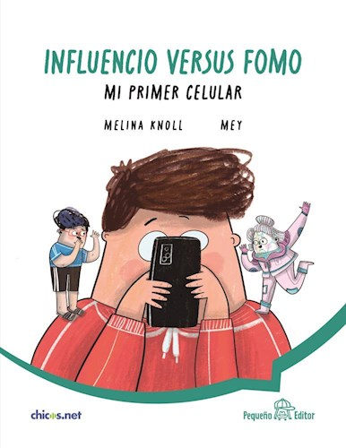
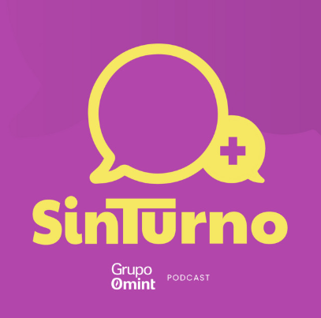
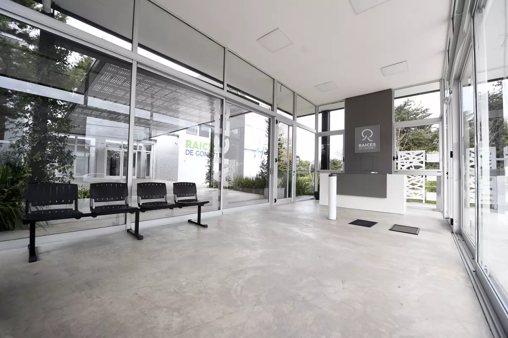

Colegio Abierto a FamiliasUn espacio para acompañarnos. Familia y Colegio, alineados para cuidar a los estudiantes.
Lecturas que el EOE recomienda para entender cómo funciona el cerebro de niñas, niños y adolescentes y cómo acompañarlos. Los encontrás en librerías y bibliotecas.

📘Daniel J. Siegel y Tina Payne Bryson (Alba Editorial)
12 estrategias revolucionarias para cultivar la mente en desarrollo de tu hijo. Explica de manera sencilla cómo se desarrolla el cerebro infantil y propone herramientas para las rabietas, los límites y las emociones, como "conecta y redirige" y "ponle un nombre para domarlo". Especialmente útil para familias de Inicial y Primaria.

📘Daniel J. Siegel y Tina Payne Bryson (Alba Editorial)
Ejercicios prácticos, hojas de trabajo y actividades para poner en práctica en casa las estrategias del libro anterior.

📘Gloria A. Calvo, Camila Lynn y Agostina Mileo · Ilustraciones de Martina Trach (Ediciones Iamiqué)
Libro de la colección ESI de la Dirección de Educación Sexual Integral de la Provincia de Buenos Aires, para acompañar a niñas, niños y preadolescentes en los cambios de la pubertad. Recomendado para familias de Primaria y Secundaria.

📘Fabricio Ballarini y Juan E. Bonnin
Información científica para tomar el control de nuestra vida digital. Lectura sugerida por el EOE para conversar en familia sobre tecnología y pantallas. Útil para familias de Primaria y Secundaria.

📘Teresa Torralva (Paidós) · Prólogo de Facundo Manes
Para familias de Secundaria: qué ocurre en el cerebro adolescente y cómo acompañar con límites claros, empatía y confianza.

📘Melina Knoll · Ilustraciones de Mey (con la colaboración de Chicos.net)
Novela para leer en familia con chicos de 9 a 11 años que están por tener su primer celular o ya lo tienen. Cuando César consigue el suyo, aparecen Fomo e Influencio, y la familia termina armando su propio plan digital familiar. Recomendado para Primaria.

📘Podcast de divulgación científica de Fabri Ballarini
Un podcast para escuchar en familia o en el camino al colegio. Buscar en Spotify

La recepción es el primer lugar donde familia y colegio se encuentran. Elegí lo que te inquieta y te sugerimos por dónde empezar.